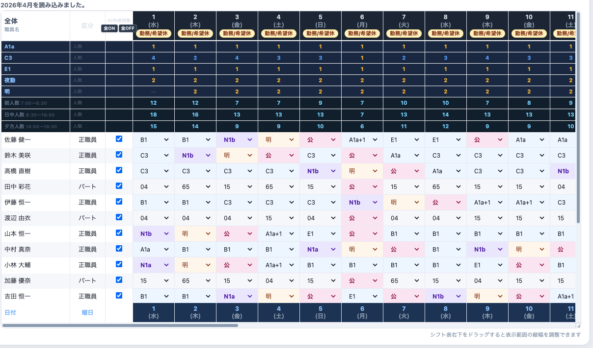
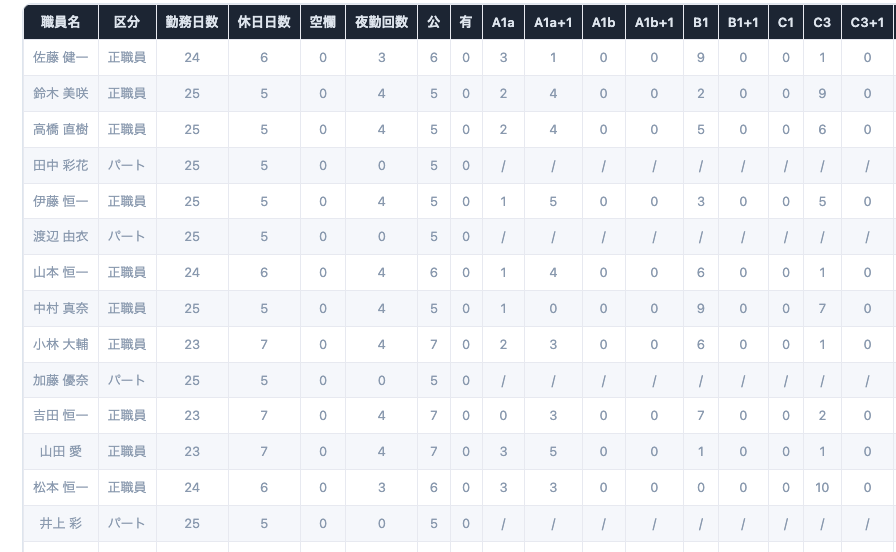

希望休・夜勤配置・固定勤務を考慮し、AIが数分でシフトを自動作成。
現役介護士が開発した、介護施設専用システムです。


シフト作成担当者の毎月の負担を、根本から解消します
毎月こんな悩みが…
こんなに変わります！
施設名・メールアドレスだけで、すぐ体験できます
スタッフ全員の希望をまとめて、条件をすり合わせるだけで何時間も...
夜勤の回数・連続勤務・インターバル...考慮することが多すぎる
休日や残業を使ってシフト作成。本来の業務に集中できない
シフト調整のために、気づけば自分だけ残っている状況が続く
やっと完成したのに急な連絡で一から調整。疲弊感が積み重なる
気づけば、自分だけ残っていた。
毎月のシフト作成が、重荷になっていませんか？
シフト作成に何時間もかかる
希望休の調整が大変
夜勤の偏り調整が難しい
毎月サービス残業になっている
作成担当者の負担が大きい
これらすべての課題、介護シフトAIが解決します
現場の課題に寄り添った、実用的な機能を提供します
スタッフの希望休や勤務条件を入力するだけで、AIが最適なシフトを自動生成します。
フロアごとに必要スタッフ数や資格条件を個別設定。複数フロアを持つ施設でも対応可能です。
作成したシフトはExcel形式で出力可能。既存の業務フローに合わせてそのまま活用できます。
実際の介護現場での経験をもとに設計。直感的な操作で誰でもすぐに使いこなせます。
数時間かかっていたシフト作成を大幅に短縮。担当者の負担を根本から解消します。
実際にシフト作成の苦労を経験した現役介護士が開発。"使える"機能だけを厳選しています。
実際の介護現場でのフィードバックをもとに、継続的に機能を改善しています。
施設の規模や運営方針に合わせてカスタマイズ可能。導入後のサポートも充実しています。
大規模なシステム投資は不要。月額10,000円〜の手軽な価格でスタートできます。
"やっと終わった…"から、
"すぐ終わった！"へ。
シフト作成の時間を、本来の介護へ。
シンプルで見やすいUIで、誰でも直感的に操作できます
シフト表画面
勤務集計・分析画面
スマホ対応画面
介護現場で実際に使いながら、改善を続けています
開発者自身が現役介護福祉士として実際の介護施設でシステムを使用。現場の声をもとに継続的に改善しています。
職員情報・シフトデータは施設ごとに独立して管理。第三者への提供や商業利用は一切行いません。
IT苦手な方でも安心。導入から運用まで開発者が直接対応。LINEやメールで気軽に相談できます。
導入施設のロゴ・実績を順次掲載予定
最短1週間で導入が可能です
メール・LINE・Instagramでお気軽にご連絡ください。疑問や不安もお気軽にどうぞ。
実際のシフトデータでシステムを体験。費用ゼロで使い心地を確認できます。
施設の勤務条件・フロア設定を開発者が直接サポート。最短1週間で運用開始できます。
本格運用スタート。導入後も継続的にサポート。困ったことはいつでも相談できます。
施設の規模に応じた柔軟な料金設定
※ 施設規模に応じてご相談可能
※ 施設規模に応じてご相談可能
🎁 全プラン・無料トライアルあり——費用ゼロで実際のシフト作成を体験できます
「なぜ介護士がシステムを？」——その答えがここにあります
代表・開発者 ／ 介護福祉士（現場経験 約6年）
介護現場で約6年間勤務し、毎月のシフト作成に多くの時間がかかることに課題を感じていました。
希望休の集計、夜勤のバランス調整、Excelへの転記……。シフト担当者が休日返上で作業する姿を何度も見てきました。
「もっといい方法があるはず」——その思いからATRI AIの開発をスタート。
介護現場で実際に使いながら改善を続けているので、現場の課題に本当に寄り添ったシステムになっています。
導入をご検討中の方からよくいただくご質問です
はい、職員の希望休・固定勤務・夜勤ルールなどを登録するだけで、AIが自動的に最適なシフトを生成します。生成後に手動で微調整することも可能です。AIが土台を作り、担当者が最終確認する形で安心してご利用いただけます。
はい、作成したシフトはワンクリックでExcel形式に出力できます。既存の運用フローに合わせてそのまま活用できるため、手作業での転記が不要になります。
はい、グループホームや小規模デイサービスなど、職員数が少ない施設でもご利用いただけます。施設の規模に合わせた料金設定も可能ですので、まずはお気軽にご相談ください。
はい、職員情報・シフトデータは施設ごとに独立した環境で管理します。第三者への提供や商業利用は一切行いません。導入前にデータ管理の詳細についてご説明いたします。
お問い合わせから最短1週間で導入が可能です。無料デモで使用感をご確認いただき、初期設定のサポートを経て本格運用を開始します。IT知識がなくても安心してご利用いただけます。
はい、現役介護士が開発したシステムのため、介護現場で使いやすい設計になっています。無料トライアル中も開発者が直接サポートします。LINEやメールでのご質問にいつでも対応します。
無料トライアルのお申し込み・ご質問はこちらから
shift.ai.atri@gmail.com
メールを送る →@ATRI_AI_OFFICIAL
フォローする →QRコードを読み取って友だち追加
友だち追加 →施設名とメールアドレスだけで、すぐにお試しいただけます。費用は一切かかりません。